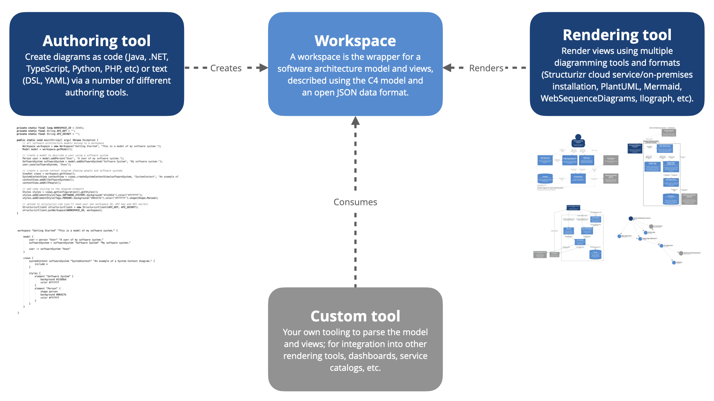

Diagams as code 2.0
There has been a trend over the past few years towards text-based tooling and "diagrams as code", with the most popular examples including PlantUML, WebSequenceDiagrams and Mermaid. With these tools, the diagram source is provided as text using a proprietary domain-specific language, which the tool then visualises, typically with an automatic layout algorithm. These tools generally have a low barrier to entry, and the source text is easily version controlled. Also, it's relatively straightforward to automate the use of these tools in order to generate diagrams and documentation during your build process.
However, each diagram needs to be defined separately, typically in a separate text file. If you have the same element on two diagrams, and you want to change the name of that element, you need to make sure that you change the name everywhere it's used. The global search and replace features in most developer tooling does make this less of a problem, but it's just one way that a collection of diagrams can easily become inconsistent if not managed properly. To solve this problem, we can create a single model, and visualise multiple views of it.
Structurizr is a collection of tooling to create software architecture diagrams and documentation based upon the C4 model. Structurizr was started in 2014 by Simon Brown (the creator of the C4 model), and has grown into a community of tooling, much of which is open source. In Structurizr terminology, a "workspace" is a wrapper for a software architecture model (elements and relationships) and views. Workspaces are described using an open JSON data format (OpenAPI 3.0 definition), which decouples model authoring from diagram rendering.
tl;dr
Structurizr lets you create multiple diagrams from a single model, and those diagrams can be rendered with a number of tools, reducing vendor lock-in. If you just want to create some software architecture diagrams quickly:

Authoring tools
There are a number of tools for creating a Structurizr compatible workspace; including text-based DSLs and code-based client libraries. The Structurizr DSL is the recommended authoring tool for most teams, with the code-based tools being useful for teams who want to use code to help build their software architecture model (e.g. component discovery via static analysis, parsing distributed log files, etc) to create data-driven software architecture diagrams.
| Structurizr DSL | Mentioned on the ThoughtWorks Tech Radar - Techniques - Diagrams as code, the Structurizr DSL allows you to create multiple diagrams, in multiple output formats, from a single DSL source file. |
| Arch as code | A command line utility to create software architecture models as YAML. |
| Structurizr for Java | A Java library to create Structurizr workspaces. |
| Structurizr for Clojure | A Clojure wrapper over Structurizr for Java. |
| Structurizr for .NET | A C# .NET port of Structurizr for Java. |
| Structurizr for TypeScript | A TypeScript port of Structurizr for Java. |
| Structurizr for PHP | A PHP port of Structurizr for Java. |
| Structurizr for Python | A Python port of Structurizr for Java. |
| Model | A Go port of Structurizr for Java that also includes a diagram editor. |
Rendering tools
Similarly, there are number of tools that can be used to render diagrams in a Structurizr DSL/JSON workspace, each offering a different set of features and integration options.
|
Structurizr cloud service, on-premises installation, and Lite
A web-based rendering tool, with diagrams that are zoomable, interactive, animatable, and embeddable.
It can also publish Markdown/AsciiDoc documentation and architecture decision records (ADRs).
|
|
|
C4Viz
A web-based rendering tool that renders a zoomable set of C4-PlantUML diagrams.
|
|
|
Ilograph
Ilograph is a web-based modelling tool that provides an interactive way to navigate a hierarchical model.
The Structurizr CLI can be used to convert a Structurizr DSL/JSON workspace to Ilograph format.
|
|
|
PlantUML
PlantUML is a text-based diagramming tool.
The Structurizr CLI can be used to convert the views defined in a Structurizr DSL/JSON workspace to PlantUML and C4-PlantUML formats.
|
|
|
Mermaid
Mermaid is a text-based diagramming tool.
The Structurizr CLI can be used to convert the views defined in a Structurizr DSL/JSON workspace to Mermaid format.
|
|
|
DOT (via Graphviz)
DOT is a text-based diagramming language, with Graphviz used for rendering.
The Structurizr CLI can be used to convert the views defined in a Structurizr DSL/JSON workspace to DOT format.
|
|
|
WebSequenceDiagrams
WebSequenceDiagrams is a text-based diagramming tool.
The Structurizr CLI can be used to convert dynamic views defined in a Structurizr DSL/JSON workspace to WebSequenceDiagrams format.
|
|
|
structurizr2csv
structurizr2csv is a tool to convert a Structurizr DSL/JSON workspace to the diagrams.net CSV format.
|
Custom tools
Workspaces are described using an open JSON data format (OpenAPI 3.0 definition), so it's relatively straightforward to build your own custom tooling to consume that data; perhaps for rendering views with your own diagramming tool, or to integrate the data with your internal dashboards and service catalogs.

Although JSON is an easy data format to work with, using one of the code-based client libraries (see authoring tools) will provide a quicker starting point.
For example, you can load a JSON workspace definition using the Java client library as follows, with the resulting Workspace object providing an easy way to navigate/manipulate/translate/export the data:
public static void main(String[] args) throws Exception {
Workspace workspace = WorkspaceUtils.loadWorkspaceFromJson(new File("workspace.json"));
}